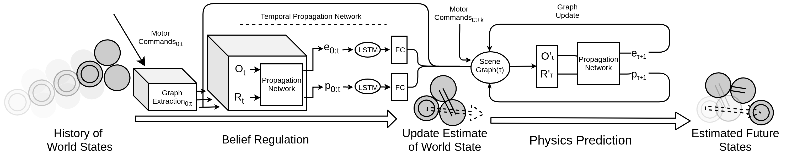

Belief Regulated Dual Propagation Nets for Learning Action Effects on Articulated Multi-Part Object
A. E. Tekden A. Erdem E. Erdem
M. Imre M. Y. Seker E. Ugur
Boun CoLoRs

Abstract
In recent years, graph neural networks have been successfully applied for learning the dynamics of complex and partially observable physical systems. However, their use in the robotics domain is, to date, still limited. In this paper, we introduce Belief Regulated Dual Propagation Networks (BRDPN), a general purpose learnable physics engine, which enables a robot to predict the effects of its actions in scenes containing articulated multi-part multi-objects. Specifically, our framework extends the recently proposed propagation networks and consists of two complementary components, a physics predictor and a belief regulator. While the former predicts the future states of the object(s) manipulated by the robot, the latter constantly corrects the robot’s knowledge regarding the objects and their relations. Our results showed that after trained in a simulator, the robot could reliably predict the consequences of its actions in object trajectory level and exploit its own interaction experience to correct its belief about the state of the world, enabling better predictions in partially observable environments. Furthermore, the trained model was transferred to the real world and its capabilities were verified in correctly predicting trajectories of pushed interacting objects whose joint relations were initially unknown.
Paper
A. E. Tekden, A. Erdem, E. Erdem, M. Imre, M. Y. Seker and E. Ugur
Belief Regulated Dual Propagation Nets for Learning Action Effects on Articulated Multi-Part Object